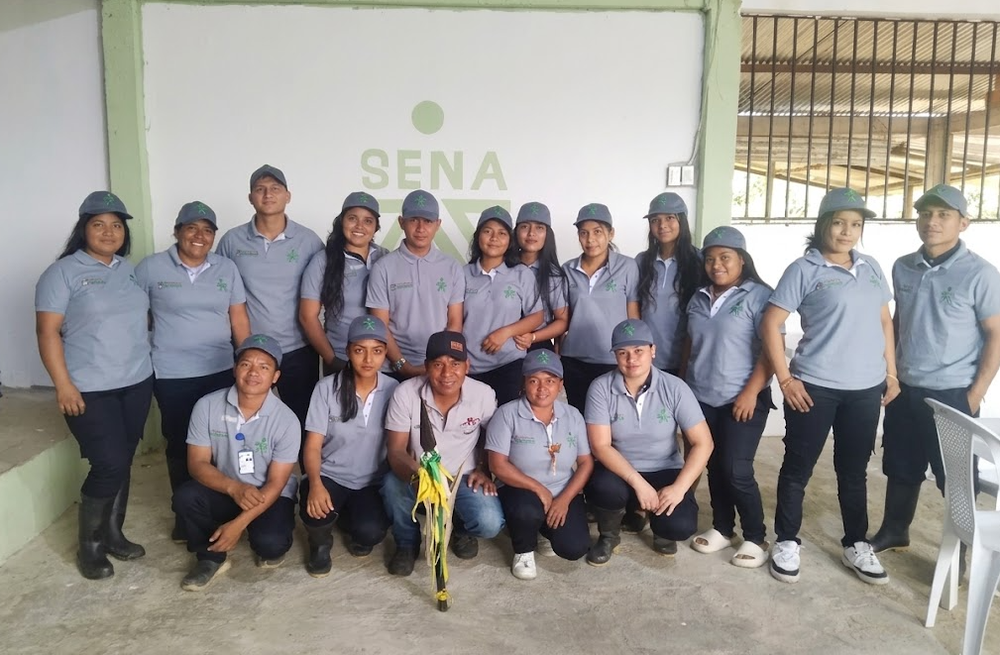
Wat-Usan
De la formación a la producción, construyendo futuro.
Sobre Nosotros
Wat-Usan nace de nuestra Identidad Indígena y la necesidad de garantizar productos agropecuarios frescos en Nariño.Hoy nos consolidamos como jóvenes emprendedores del SENA transformando la producción en un modelo ético y cercano.
Nuestra Misión
Proveer a la comunidad alimentos de calidad (tilapia, cachama, cerdo y pollo), garantizando un trato digno, respeto y bienestar animal desde la crianza hasta el sacrificio humanitario.
Nuestra Visión (2030)
Ser referentes en el departamento de Nariño en producción agropecuaria ética y sostenible, afirmando que la eficiencia productiva es plenamente compatible con el respeto a la vida animal.
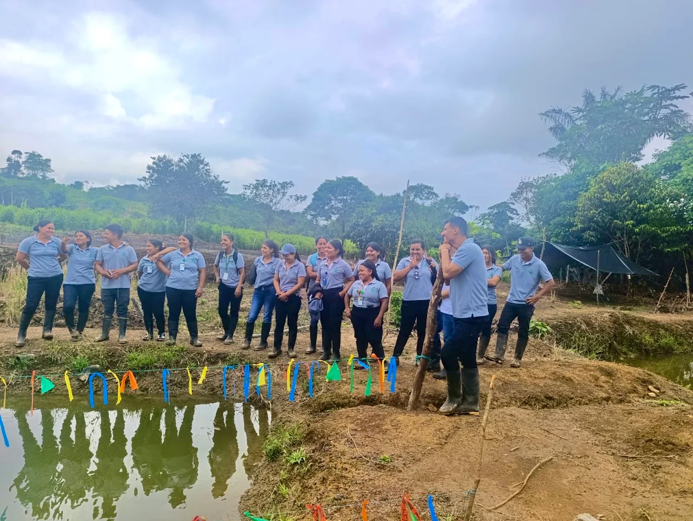
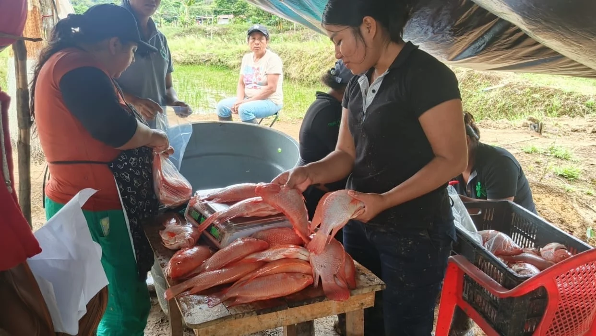
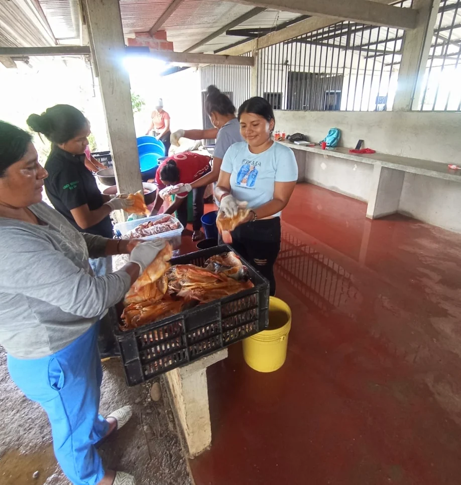
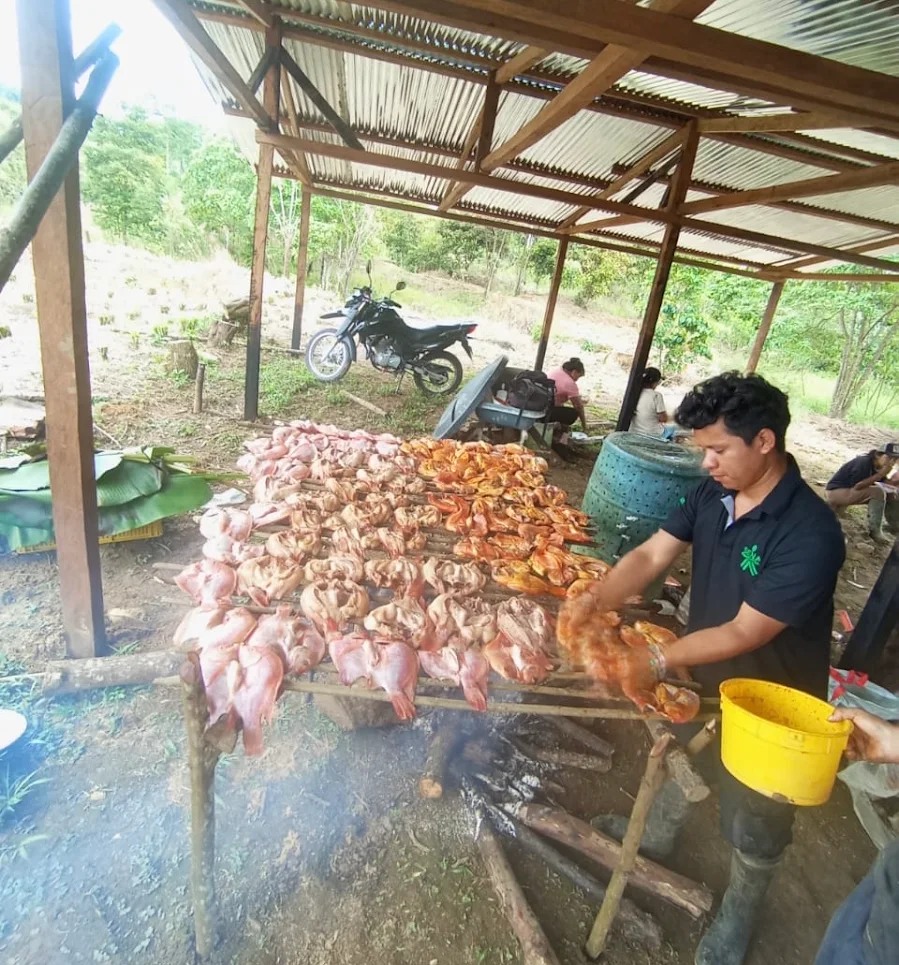
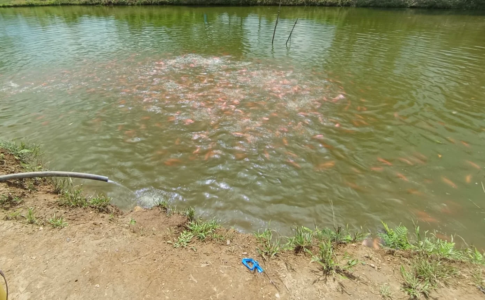
Nuestros Productos
Seleccionados cuidadosamente para llevar la mejor calidad y frescura a tu mesa.
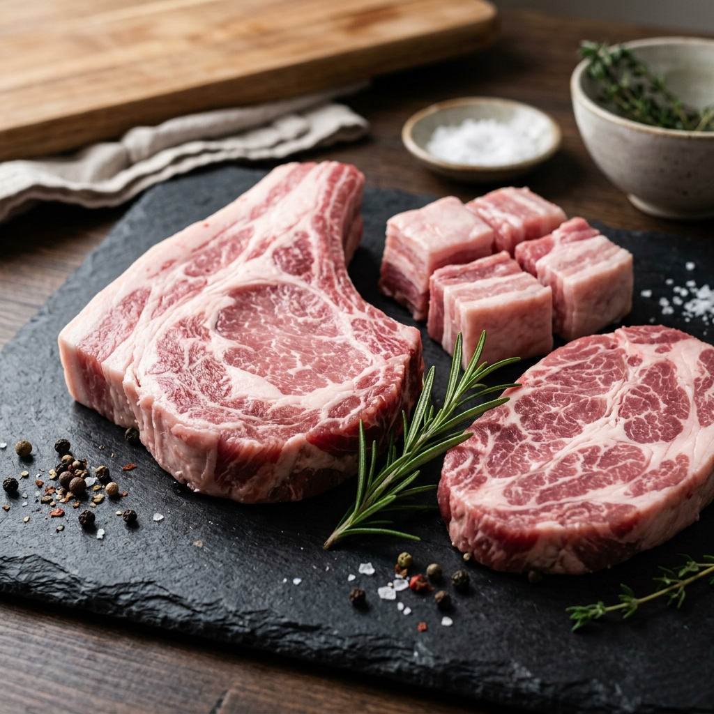
FrescoCarne de cerdo fresca
Cortes seleccionados de primera calidad, ideales para todas tus recetas. Suaves, jugosos y con el mejor sabor natural.
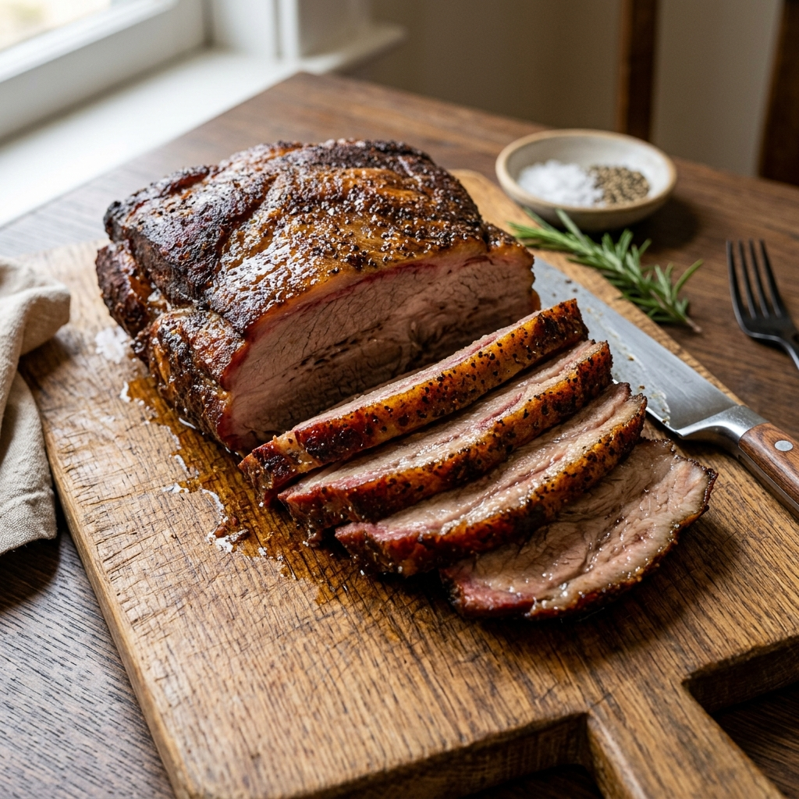
AhumadoCarne de cerdo ahumada
Proceso de ahumado tradicional que resalta sabores intensos y aromas excepcionales, perfecta para ocasiones especiales.
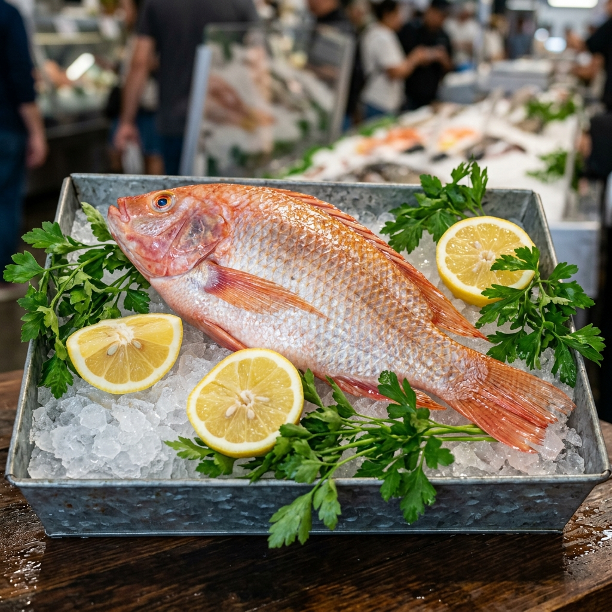
FrescoTilapia roja
Pescado de pulpa blanca. Cultivada bajo estrictos estándares de calidad para asegurar frescura y nutrición de alto nivel.
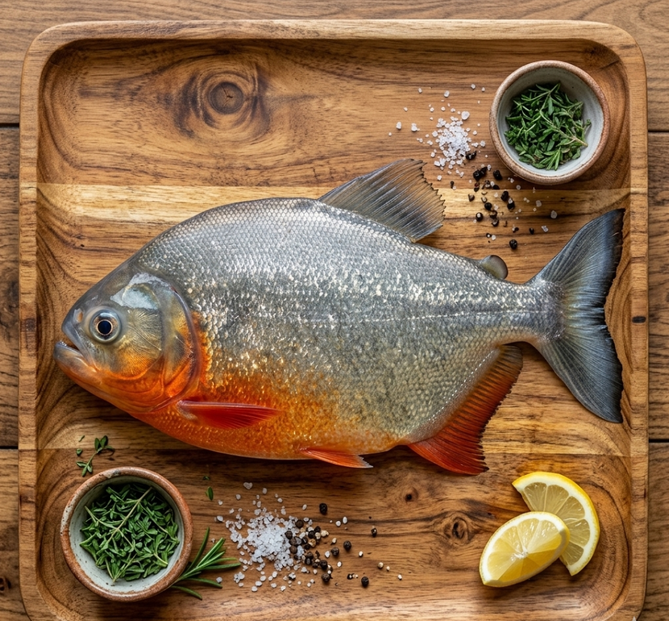
FrescoCachama
Pescado fresco, carnoso y con un sabor característico que deleita el paladar en preparaciones asadas o fritas.
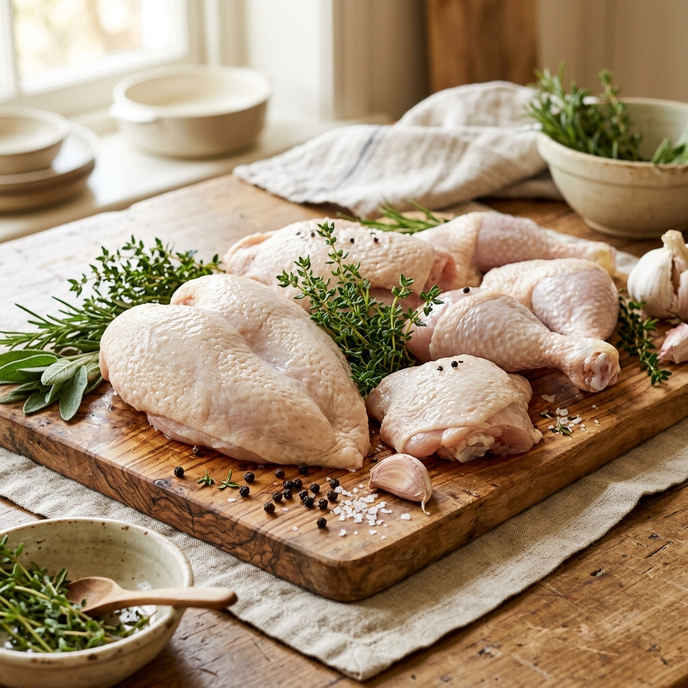
FrescoPollo blanco
Pollo de alta calidad, tierno y saludable. Criado de forma responsable garantizando la mejor proteína para tu hogar.
Calidad y Compromiso
Garantizamos estándares impecables desde la producción hasta tus manos.
Frescura Total
Productos frescos y seleccionados minuciosamente día a día.
Higiene y Manejo
Procesos con un buen manejo de salubridad.
Garantía Premium
Mejorando nuestros procesos dia a dia.
Satisfacción
Un absoluto respeto y compromiso con la satisfacción de cada cliente.
Nuestro Equipo
Detrás de cada producto Wat-Usan, existe un gran equipo de jóvenes talentos y aprendices comprometidos con la excelencia. Con orgullo, dedicación y el permanente respaldo del SENA, aplicamos las mejores técnicas agroindustriales y comerciales.
"El trabajo colaborativo, la disciplina y el espíritu emprendedor es nuestra principal herramienta de desarrollo."
Ubicación
Visítanos o contáctanos. ¡Estamos muy cerca de ti!
-
Dirección
Jardines de Sucumbíos, Ipiales, Nariño, Colombia.
-
Teléfono
310-586-0550
314-410-9290
-
WhatsApp
+57 310-586-0550